← 返回阅读库 · 原论文目录
论文讲解阅读文档 · 表征学习 · v205
Solving Inefficiency of Self-supervised Representation Learning[2104.0876]
视频时长 00:06:16；讲解文字 2,964 字符；提取讲解画面 16 张。按视频原顺序阅读，每段文字保留时间戳。
文字来自整段视频的自动语音转写，按自然停顿分段，并与 PPT / 论文页面 / 演示画面对齐。未将讲解压缩为摘要；术语、数字和口述公式请结合画面及原论文核对。 阅读稿已校正规范部分明确术语误识别；原始逐字稿和每处修改记录另行保留。
讲解画面为源视频截图（640×360），不是可编辑 PPT 文件。全片按每秒 2 帧扫描内容变化，逐步展开页保留；连续动画保留代表画面。清晰度受源视频限制。
下载完整资料包 · 含离线 HTML、PDF、Word、全部 PPT 画面和字幕。
原论文与材料
Solving Inefficiency of Self-supervised Representation Learning · 下载完整 PDF（11 页）
按时间阅读
00:00:00–00:00:15 · 画面 001
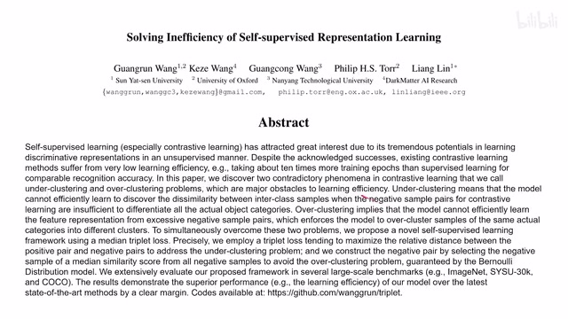
00:00:00–00:00:15 · 画面 001大家好,今天我们来快速说一篇论文 Solving Inefficiency of Self-Supervised Representation Learning，它是认为说我们现在的 Self-Supervised Learning 不够有效率，怎么样提高它的学习的效率呢？这里作者首先给我们讲了一个故事。那么故事的开头，作者先给我们说我们做这个 Representation Learning 的时候可能会遇到以下一种情况，像中间这种是我们期望的，比如说同一种图像。
00:00:15–00:00:25 · 画面 002
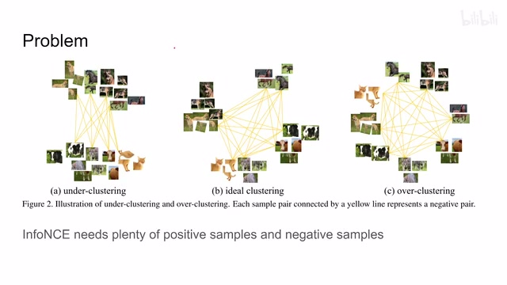
00:00:15–00:00:25 · 画面 00200:00:25–00:00:26 · 画面 003
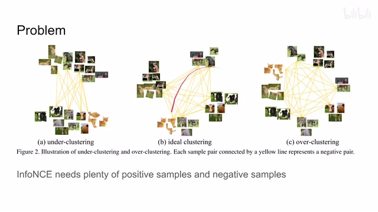
00:00:25–00:00:26 · 画面 00300:00:26–00:02:00 · 画面 004
00:00:26–00:02:00 · 画面 004它们分在了就靠的比较近，同一个种类的图像靠的比较近，不同种类的图像靠的比较远，这是我们期望的结果。但是实际上在 self-supervised learning 的过程中，我们有可能会出现这种情况，比如说不同种的图像都靠到一起了，都是一个大堆，这是另一个大堆，这个叫做 under-clustering。还有或者是这种情况就是。
即便是他们是同一种图像，但是因为他们之间有区别，所以他们还是被聚到不同的中心啊，这个叫做这个 overcluster。你看这个猫，这个猫对吧，这个狗，这个狗对吧，这个他这个举这个意思。那作者说呢，像我们常用的像 InfoNCE 这种 loss 呢，本质上是希望我们的 positive sample 的距离尽量的近，这个 negative sample 的距离尽量远。
但实际上我们提供的 positive sample 和 negative sample 它们的数量是非常不平衡的，而且我们的 positive sample 数量比较少，negative sample 的数量比较多。那么作者认为我们很有可能会导致这种 overclustering 的现象，也就是说大家各成一派，因为只对自己的 different view 它是作为 positive sample。
那对于同一类的图像，虽然他们也应该让这个 feature 变得近一些，但实际上呢，在我们 train 这个 ifose 的时候，我们还是把它标出了 negative sample，那很容易呢就产生了这种 over-clustering 的这种效果。那为了避免这种情况呢，作者这里提出了说啊，我们来重新看回到我们原来的这个 triplet loss 啊，这个是一个很有意思的事情。我们看到 triplet loss 它的这个核心呢就是这个式子，就是我们 input 的一个 anchor 或者叫 query。
00:02:00–00:02:09 · 画面 005
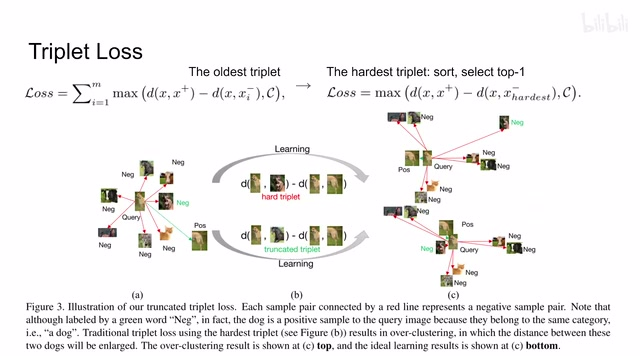
00:02:00–00:02:09 · 画面 00500:02:09–00:02:10 · 画面 006
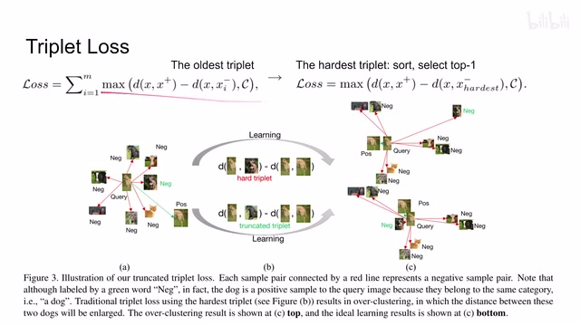
00:02:09–00:02:10 · 画面 00600:02:10–00:02:29 · 画面 007
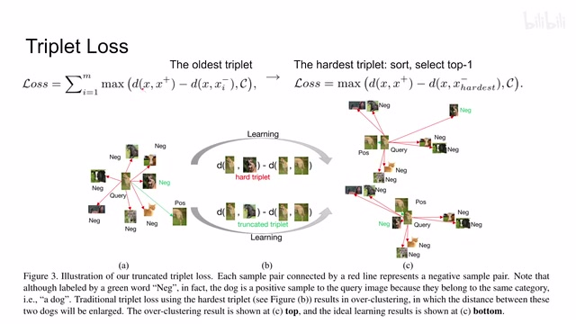
00:02:10–00:02:29 · 画面 007那它呢有 positive sample，它有 negative sample，那么我们希望我们的 anchor 呢到这个 positive sample 的距离大于这个 anchor 到 negative sample 的距离，而且这个距离的差呢要大于一个阈值，这个地方我们是 C 嘛。然后这样子呢我们构成一个 loss，这个呢是我们最经典的这个 triplet loss 哎 ，作者把它搬出来了。那为什么要搬出它来呢？作者的这个故事要从这开始讲了。
00:02:29–00:02:33 · 画面 008
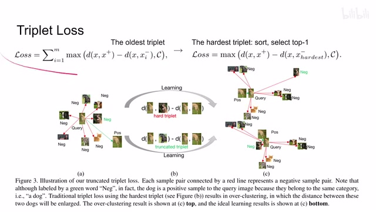
00:02:29–00:02:33 · 画面 00800:02:33–00:03:51 · 画面 009
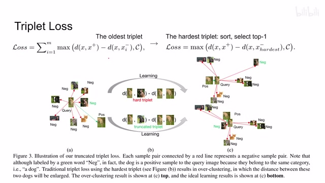
00:02:33–00:03:51 · 画面 009因为呢我们在过去使用这个 triplet loss 呢，经常使用这个 hardest triplet loss，也就是说呢，我在这个计算这个 negative sample 的距离的时候呢，我不是说随便拿个 negative sample 就完了，我呢是要拿这个 hardest negative sample。那具体来说呢，就是离我们这个 query 最近的这个 negative sample。因为你想，假如说他能把最近的这个 negative 都能给它区分开，用它来把我们这个 decision boundary 给它撑开，那对于这些更加简单的距离本来已经就很远的这个 samples 那这自然就更不是个问题了，对不对？所以呢，这个是我们的这个 hardest triplet 这个 loss 的设计的思想。那当然这个设计的出发点是好的，但是实际上呢，我们如果把它放在这个 self-supervised learning 里面呢，哎我们
其实不那么确定说我们的这个靠的最近的这个 sample 它就是一个 negative sample。那比如说你看到这里本来这个狗呢它跟自己的另外一半部分它离得很近没问题，这是 positive sample。那离它最近的呢其实是另一条狗，这个按理说呢它们是处于同一类的，它们也应该靠近一点。但是如果但是呢，如果我们直接用这个 hardest 那就存在问题了，它会也把它
00:03:51–00:03:54 · 画面 010
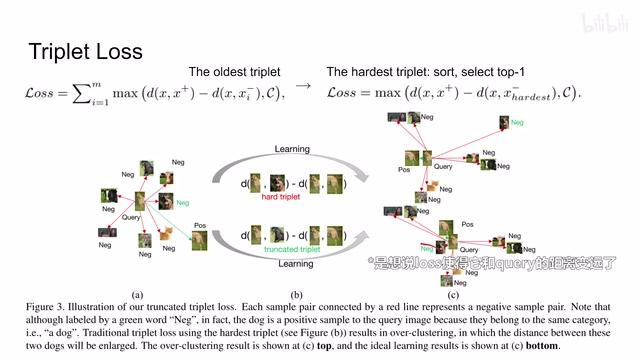
00:03:51–00:03:54 · 画面 010这个狗也变成 negative sample。那这个呢就是作者认为说原来的这个 hardest triplet 不适合直接放到我们 self-supervised learning 里面这样一个原因。那么当然作者不会在这里停下，为了克服这种困难，那这里呢作者就提出这个 truncated triplet loss。他的思想呢非常简单，就是说那我既然这个 hardest 这个 sample 它可能还是友军，我们不要痛击它
00:03:54–00:04:07 · 画面 011
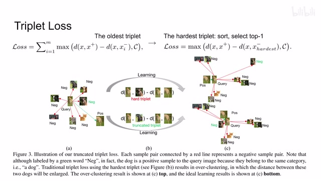
00:03:54–00:04:07 · 画面 01100:04:07–00:05:30 · 画面 012
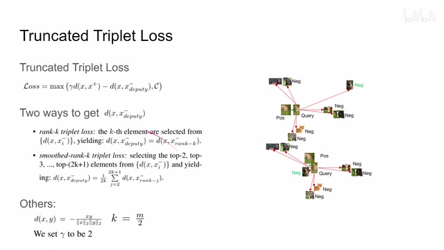
00:04:07–00:05:30 · 画面 012但是我往后再看几位就是距离跟我们当前这个 query 足够远的这些 sample，那它铁定应该就是 negative sample 了。所以你可以看到这里呢，相对于原始的这个 triplet loss，本文提出的这个 truncated triplet loss 呢做了一点改动。第一个这是一个 gamma，其实就是一个 2，这是一个小的细节，并不是重要。最重点呢是这个 deputy，这个 deputy 的 sample 到底是谁呢？它并不是我们的 hardest，也就是距离我们最近的 negative sample
而是这里作者设计了两条路径，第一种方法就是 rank k，也就是说我们把所有的 sample 跟我们的 query 计算出一个 similarity 或者说一个距离我并不是说选它最近的,而是选它第 k 近的这个 sample,作为我们的这个真正用来计算的这个 deputy sample,也就是这个 negative sample。还是因为如果这两个 representation 靠得很近,那它们有可能真的还就是一个类的,我们还不希望它们分开。所以我们把这个样本按距离排序,选择稍微靠后几位的,那这些样本是铁定的就是 negative sample。
当然在此基础上我们还可以 smooth rank k 对吧？我们不要最近你们后面离着距离比较远的几位大家凑合起来平均对吧？这个就是我们的 loss。很显然这种设计使用了更多的负样本
00:05:30–00:05:31 · 画面 013
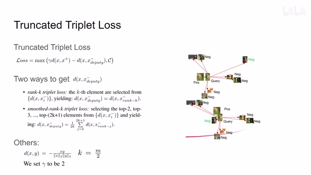
00:05:30–00:05:31 · 画面 01300:05:31–00:05:59 · 画面 014
00:05:31–00:05:59 · 画面 014作者实验表明它的 smooth 的效果也比原来的要好一些。但是总的来说，本文的核心思想就是我把 triplet 带回来了，但是我们不要用 hardest triplet，而是用一些距离稍微远一点的 negative sample，我们确定它真的是 negative sample。这么一个设计非常简单的一个设计。那么最后来看到一些结果大体的一些数字，我们来看到
00:05:59–00:06:16 · 画面 015
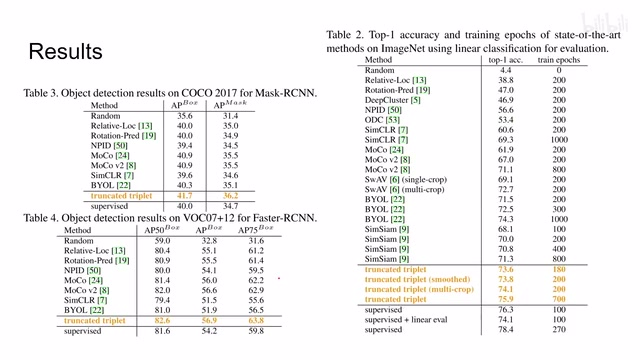
00:05:59–00:06:16 · 画面 015效果呢还是不错的，还是非常推荐你去查看他的原文，他的实验设计然后附录中汇报一些内容。好的，那么以上就是我对这个论文的一个快速的一个介绍啊。那么感谢您的收看，再见
00:06:16–00:06:16 · 画面 016
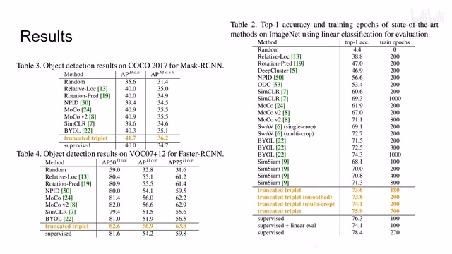
00:06:16–00:06:16 · 画面 016转写与来源说明 · 0 个自动复核提示
保留 16 个原始语音片段，0 个片段触发自动复核提示。提示仅用于定位可能的术语、重复或识别问题，不等于已确认错误。
讲解画面为源视频截图（640×360），不是可编辑 PPT 文件。全片按每秒 2 帧扫描内容变化，逐步展开页保留；连续动画保留代表画面。清晰度受源视频限制。
原视频：paper/合集_2026-10-16_表征学习/[论文速览]Solving Inefficiency of Self-supervised Representation Learning[2104.0876].mp4
SHA-256：5e1f28c4320d6e8b5780db160e0347d29ef8c8d895301a2c93be09e8a9001b67
全文按视频语音与画面制作。原论文可从上方链接下载；完整资料包保留全文、原始逐字稿、字幕和校对记录。